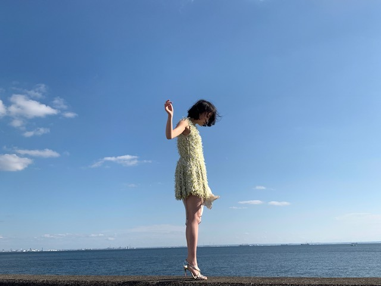

2018/1125Sunらしさ。
こんばんは
B.L.T.発売中です
みてくださいましたかー？




冬の海風の冷たさが心地よく
天気に恵まれた撮影でした
昔から、堤防や防波堤が好き！
楽しかったな〜
感想お待ちしてます☺︎
質問返しpart1
今度プリン会でどこか行くとしたら
行きたい国、または行きたい場所ってどこ？
→海外旅行行きたいねとはずっと話してます！
まったり温泉も良き
遊園地も行きたい
最近ハマってることはなんですか？
→温泉が好きなので色んな温泉地を
調べることかな
好きな男性の服装は？
→シンプル！全身黒で無地。みたいな
派手すぎない格好がいいです
男性は黒髪が好きですか？
みおなさんが染めたのを聞いて
少し染めてみたいなーって思いました！
→黒髪が一番だけど茶髪もいいと思います
似合ってれば結局なんでも良き
未央奈の描くアイドルの理想は？
→わが道をゆくポジティブな人
ももんがは好きですか？
→まだちょっと怖いです
何かキュンキュンできる
オススメの映画はありませんか？
→来年公開のホットギミックっていう映画が
おススメです♪
どうやったら強い大人になれますか？
→近くにいる大人の背中をちゃんと見て
自らいろんな経験をすることかな！
ニコルとプティの近況を!!
→お揃いの洋服着てるよ最近。笑
あと、おせち予約しましたー
とことん甘やかしてます 親バカです
今超やりたいことは？
→失恋ショコラティエや
イニシエーション・ラブみたいな小悪魔女子を
演じてみたいな
さつまいも料理の中で何が好きですか？
→ふかしいも
休みの日は家にいる方ですか？外に出る方ですか？
→アウトドアだったけど最近は一日中寝てたり
ドラマや映画を観たりすることが多いかな
未央奈はルーティーンとかはあるの？
→愛犬に朝と夜、必ずおはようとおやすみの
チューをします♡
1番テンションが上がる晩御飯のメニューは何ですか？
→すきやき
アイドルになっていなかったら何をしていましたか？
→子供が大好きなので保育士かな
では！
コメント(413)
楽しみにしています♪☆
良い写真ばかりで、大満足でした
お疲れ様です
最近の楽しみがみおなのブログをみると散歩くらいしかないです。笑
質問返しありがとうございます（＾_＾）
ブログ更新ありがとう
堀ちゃんみたいな脚になりたい。
もちろんイイ意味で。
なんか気になる存在。
温泉良いよね～
歓楽温泉や静養温泉も良いけど
身体に本当に良く効く（病気を癒やす）
療養温泉がオススメ。
末期癌だって治してしまう奇跡の温泉が
日本各地にあるんだよねぇ。
東海地方を中心にまわってるけど温泉巡り
楽しいよね
堀ちゃんに質問デーース！
受験勉強はどのように乗り越えましたか？
お返事 お願いシマーーース！！！
ブログ更新ありがとう！
ホットギミック楽しみ！
では、また！
未央奈のグラビア、すっごくセクシー
だよ。
質問だけど、舞台鑑賞は好き？
答えて下さい。お願いします。
堀ちゃんが乃木坂の未来そのものだよ
写真集「君らしさ」1周年おめでとうございます
すごくいい写真なんですけど、画像が開けないです...。
早く見たい！！
ルーティーンがかわいい～！
ホットギミックの裏話とかしてくれるの待ってます！
白鳥と黒鳥がテーマなんだよね◎
白鳥のほうが鋭い表情してて
不思議な感じがしたけど
真っ直ぐ生きる決意の力強さと
黒鳥のしたたかにしなやかに生きる
やわらかさを出したのかなって
勝手に思った！
モバメで寒かったって言ってたから
そのせいかもしれないけど笑
インタビューのね、演技についての話で
ますますホットギミックが楽しみになったし
最後の楽しんでいきたいっていう想いが
みおならしいなって思ったよ
これからもたくさん笑っていこうね！
NOGIBINGOみおな回見るよー(^^)/
今日も1日お疲れ様でした
NOGIBINGO！夜更かししてでも観たいところですが、こちらでは放送してないのです(T ^ T)
なので後日Huluで観ますね(^-^)
みり愛は落ち着くよねー
なんか安心感がある
お猿好きよねー 笑
みり愛とあやねちんはたいして反応なかったみたいだけど 笑
猿のどんなところが好きなの？
では、明日も1日楽しもうd(@^∇ﾟ)/ﾌｧｲﾄｯ♪
おやすみおな☪️
ショートヘアがめっちゃ似合ってる！！
ホットギミック絶対見ます！楽しみにしてます！
写真ありがと〜（╹◡╹）♡
B.L.T.まだチェック出来てないから見るねー(*´꒳`*)
質問返しありがと〜♪(๑ᴖ◡ᴖ๑)♪
バッチリ映画の宣伝入れてくるところが
小悪魔だな〜(￣▽￣)
そんなわが道をゆく未央奈、良きだね！
チャァオ～～!☆彡
みおちゃん、こんばんは～～⤴⤴⤴❕❤❤❤❤❤笑顔❤❤❤
写メ素敵だねぇ⤴⤴❕❤❤❤❤❤笑顔❤❤❤
撮影場所は海～～⤴⤴❕❔❤❤❤❤❤笑顔❤❤❤
大人ぽくなったみおちゃん❕❤❤❤❤❤笑顔❤❤❤
女性らしい～～⤴⤴
大人の「君らしさ」❕❤❤❤❤❤笑顔❤❤❤
素敵だよ❕❤❤❤❤❤笑顔❤❤❤
(*^▽^)/★*☆♪
☆大人しい、おすまし！より☆彡
今回の乃木中にみおなが居なかったのは残念だったな～(^_^;)
みおななら絶対に面白いリアクションをしただろうし(^_^)
みおながビックリするところ見たかったな～、可愛かっただろうな～(>_<)
それじゃ、またね(^o^)／
2回目ですが失礼します、特別な内容ではないですが書きたくなったので失礼します( ´ ▽ ` )笑
今日ふと思い出したんですが、いつしかの堀ちゃんのブログで握手会後に台車で運んでもらってる写真と、乗ってるときにニヤリとした顔の堀ちゃんがとても印象に残ってます( ´ ▽ ` )
なんだかあの記事がめちゃくちゃ好きで、何回も読み返したのをほんとにふと思い出しました笑
写真が可愛いというのもあったんですが、そのときの文章の流れとか雰囲気におもいっきり心を掴まれました(o^^o)
それに限らずですが、堀ちゃんの書く文章が僕は凄く好きです！
頑張るぞ！という熱い内容も、好きなことを語っているときも、ゆるりと近況を教えてくれるときも、それぞれ雰囲気は違いますが、堀ちゃんが選んで表現する言葉の一つ一つの全部が好きです！
それに加えて、お忙しい中たくさんブログを更新してくれて、いつも本当に嬉しいです(o^^o)
普段のメディアでの活躍ももちろん嬉しいですが、こういう伝えてくれる場も大切にしてくれるてるんだと感じられて、ファンにとってこんなに幸せなことはありません( ´ ▽ ` )
この時代で堀ちゃんと出逢えて、堀ちゃんのファンになれて心から幸せです(o^^o)
なんだかくさいこと書きましたが、まとめると堀ちゃんいつも全部ありがとうっていうことです( ´ ▽ ` )笑
これからもガンガン応援させてくださいねー！ずっと大好きです！
また堀ちゃんのペースでの更新、楽しみにさせてもらいます(o^^o)♩
ではでは、おやすみおなー！
（らしさ）ってちょっと顔文字らしさがありますね。
BLT見ました。屋内での黒い格好の写真と青空の下の白い格好の写真が対照的ですね。インタビュー横の写真の表情がとても真っすぐで好きです。タイトルがLike a swanということで黒から白に変わってくのを白鳥の成長にかけたってことでしょうか。そう思ってブログの写真を見ると一枚目が幼く見えてきます。
最初と最後のページが繋がってるような感じがするのは、みにくいアヒルの子の話が辛い時期を超えて居場所を見つける話だってことをふまえると、堀さんがこれからも新しい居場所に沢山出会っていくのを暗示しているのかもしれませんね。
インタビューは演技への姿勢の変化の話が面白かったです。作り上げたものを壊すことを前向きな作業として捉えるのは、より良くしていくために大事なことなんですね。芝居上のキャラクターや乃木坂というグループにとって作ることと壊すことが背中合わせなように、色んな居場所を持っていられることは孤独な自分を持ってることと同じってことなのかなと思いました。
にしてもブログ４枚目の写真は、親方に「空から女の子が！」て言わなきゃいけないぐらい明らかに空から舞い降りてますね。顔が綺麗とか脚が綺麗な人は他にもいますけど、立ち姿が、そこに居ること自体が綺麗って堀さんにしか思ったことないです。
前回はブログ「キラキラな街」にブログの感想を書きました！
時間→「No.321 2018年11月24日 02:43」
ブログ更新ありがとうございます！
「B.L.T.」なんですが、ごめんなさい！
28日休みなのでチェックさせて頂きます！
オフショットありがとうございます！
本誌ではなくオフショットを見た感想ですが、黒い衣装の方は大人っぽくてカッコイイ中にもしっかりと可愛さがある印象でした！
黄色と白色が半々(表現力の無さ)の衣装の方は衣装は勿論なんですが、海と空の2色の青色が凄く綺麗でした！天気に恵まれた撮影が出来て良かったですね！早く見たくなりました！
質問返しPart1ありがとうございます！
全部見ました！また未央奈ちゃんの事が知れて嬉しいです！我が道をゆくポジティブアイドル頑張ってね！ずっと応援させて頂きます！
Part2も来年公開の映画「ホットギミック」も小悪魔未央奈ちゃんも楽しみにしています！
なんか今、乃木坂を好きになって良かったなと思いました！もしあの時「乃木どこ？」を観てなかったら、公式サイトからブログをクリックしてショートにされた時の写真を見なかったらと思うと少し怖くなりました！
僕と乃木坂との出会いは「乃木どこ？」です！そこで乃木坂とバナナマンさんが好きになり、それから「乃木中」や「バナナムーンGOLD」に加えて未央奈ちゃんが出演されている番組は勿論、乃木坂メンバーが出演されている番組やバナナマンさんが出演されている番組は出来るだけチェックするようになりました！
今は未央奈ちゃんの活躍を応援する事が出来て凄く嬉しいです！癒し、元気、刺激をくださりいつも本当にありがとうございます！大好き！
28日は「ベストアーティスト2018」に加えて「レコメン！」もありますね！ファイトです！
ここまで読んで頂きありがとうございました！
毎日お仕事お疲れ様です！体調にはくれぐれも気を付けて頑張ってくださいね！
おやすみおな～！
企画的にきっと堀さんが活躍をしているに違いない
きっと堀さん絶叫しているに違いないと思って
一週間期待していたのに
堀さんいないじゃ～ん。ガッカリしました。
まだみんな夏服だから、映画の撮影中だった頃なのかな？
海似合いますね♫
個人的に黒の衣装のみおな好き！
ぱっと見ドレス見たいだけどドレスではないか
みおないつも落ち着いてるから服も落ち着いた色がとても合うなぁって。
まぁ、みおなが着てたらなんでも好きになってしまいますが（笑）
あっという間に冬ですね
よく岐阜にはスノーボードしに行くけどみおなもウィンタースポーツやったりする？？
ウッキー未央奈かわいい
「NogiBingo」面白かったよ。
久々の 全身おさるさんはとってもかわいかったね。
フサオマキザル の赤ちゃんに
ミルクあげてたところは、
微笑ましくて いい感じだったよ。
肩乗りモンキーのソラくんとのピクニックも
ほのぼのしてて、
未央奈の愛おしそうな表情がよかったね。
カワウソ の顔真似もかわいかったよ。
ワサビくんの おうむ返しも面白かったね。
「BLT」では、
大人っぽくてキレイな未央奈だったね。
「ザンビ」の演技で学んで、
「ホットギミック」では、
演技の作り込み方法を深めていったんだね。
さすが未央奈だね。
向上心にあふれていて、
二期生の責任感を持った未央奈は、
素敵だね。
世代のバトン受け渡しは一斉にやりたいんだね。
乃木坂全体のこともよく考えてるね。
立派な姿勢でいいよね。
「ar 」では、
寝顔が とってもかわいかったよ。
服選びのところもかわいかったね。
決まった服での未央奈はとってもキレイだったよ。
大きなアジの三枚おろしは上手くできたね。
ハラワタをホラーっぽい感じで処理してたのは、
面白かったよ。
いつも未央奈が色々と学んでいってていいよね。
「Show Room」では、
「BLT」メイクの未央奈は、
すっごくキレイだったね。
宣伝6個はすごかったね。
未央奈は頭の回転が速いよね。
「PV」は美しくて、
未央奈の生き様が表現されてて、
いい世界観だったよね。
では、寒くなってきてるけど、
身体に気をつけて頑張っていってね〜。
12月15日の握手会2部で、
キレイでかわいい未央奈に会えるのを
楽しみにしてるね〜。
綺麗だね！！
B.L.T.素晴らしかったですよー！
堤防や防波堤を見ると釣りしたくなります！
海が近づくと潮の匂いが堪らないですよね♪
今回の写真もとっても透明感を感じました！
最近のグラビアは大人っぽさを感じますよ♡
保育士姿で気持ちが動いた気もしています！
愛犬ちゃん達にはチューしてるのですね～笑
NOGIBINGO!10もとっても魅力的でした！
赤ちゃん猿を抱く姿にもグッときましたよ♡
カワウソに似てるというのも納得したし、、
猿のコスプレも懐かしいし似合ってました☆
でも昔よりも大人っぽくなりましたよね～☺️


みおな☆★☆タンポポだけども～♪♪♪
( 〃▽〃)
みおなはどんどん大人へと
成長していくな♪♪
心はどうだろう？
成長してるはずや
でも、みおなには
可愛いままでいてもらいたいな♪♪♪
大好きやで！！！
みおなはタンポポの人生のキキだよ！！タンポポはジジだよ！！
みおな猫アレルギーやけどな♪♪♪
（*＾3＾）/～☆タンポポより